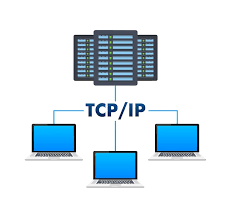

TCP/IP is a suite of communication protocols that govern how data is transmitted across the Internet. It consists of two main layers: the Transmission Control Protocol (TCP) for reliable data transfer, and the Internet Protocol (IP) for addressing and routing.
TCP/IP was developed in the 1970s by Vint Cerf and Bob Kahn as part of a research project funded by DARPA. It was designed to enable communication between different types of computer networks, leading to the creation of the modern Internet.
When you send data over the Internet: TCP breaks it into smaller packets → Each packet is labeled with source/destination IP addresses → IP routes packets through various networks → TCP reassembles packets at the destination and checks for errors.
Internet Terminology Project | Back to Home | TCP/IP - The Internet's Foundation